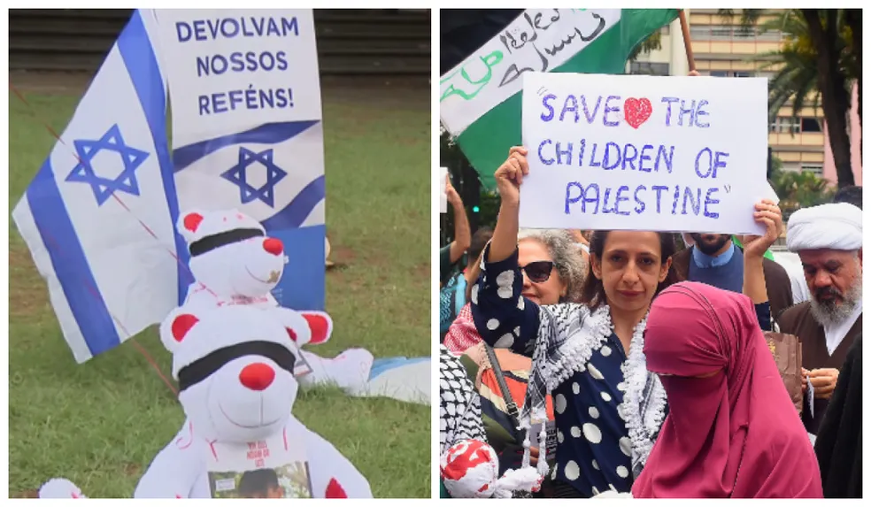
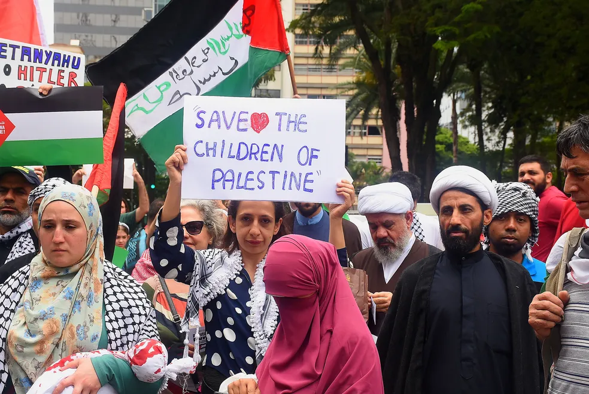

Atos em SP têm ursos de pelúcia vendados representando crianças israelenses raptadas pelo Hamas e manifestação pró-Palestina na Paulista
Parque Independência, na Zona Sul, teve 30 ursos vendados e fotos de crianças que estão desaparecidas e que estariam em poder do Hamas; na Avenida Paulista, manifestantes pedem fim de bombardeios de Israel na Faixa de Gaza. 
Dois atos na capital paulista neste domingo (29) lembraram os horrores do conflito entre Israel e Hamas.
No protesto organizado pela comunidade judaica, no gramado do Parque da Independência, no Ipiranga, Zona Sul de São Paulo, foram espalhados 30 ursos de pelúcia vendados. Segundo os organizadores, eles representam as crianças israelenses sequestradas pelo Hamas desde o dia 7 de outubro e foi inspirado em um protesto similar que ocorreu na Praça Dizengoff, em Tel Aviv (Israel), na quarta-feira (25).
A iniciativa do ato partiu de um grupo de mães e conta com o apoio da Federação Israelita de São Paulo (Fisesp) e da organização não governamental Stand With Us Brasil, em apelo às crianças e a todos os sequestrados pelo grupo terrorista Hamas e estão na Faixa de Gaza.
Na Praça Dizengoff, em Tel Aviv (Israel), o protesto ocupou a frente de um chafariz com 30 ursos vendados, com manchas pelo corpo que imitam sangue, e fotos de crianças que estão desaparecidas e teriam sido capturadas por terroristas do Hamas.
As placas com as fotos também indicavam o nome e a idade de cada criança, o status de sequestrado e a hashtag #BringHomeNow (#TragaParaCasaJá, em tradução livre).

Pró-palestinos
A Avenida Paulista foi cenário neste domingo (29) do outro ato, em solidariedade ao povo palestino. Os manifestantes levaram faixas e cartazes pedindo fim aos ataques na Faixa de Gaza realizados por Israel e, também, uma Palestina livre.
